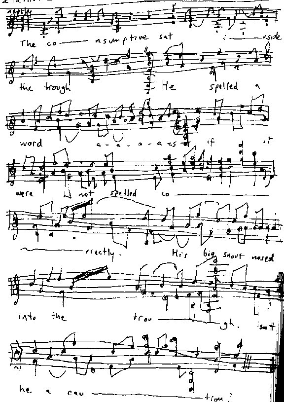

Tuesday, February the 3rd, 2004
back to: title, date or indexes

Last week an auction took place in an eerie fishing village somewhere or other. Among all the chandlery and angling equipment, I was astonished to find the single-page manuscript of Lothar Preen's first draft of his song The Consumptive's Vest (pictured above). It was thought to have perished in the infernal conflagration which destroyed the Potato Building in the 1960s. Its discovery will, I am sure, delight Preenites around the globe.
Scholars will note that the words on this first draft bear no relation to the lyric of the final version, which caused such uproar at the 1955 Festival of Argumentative Music in Ülm.